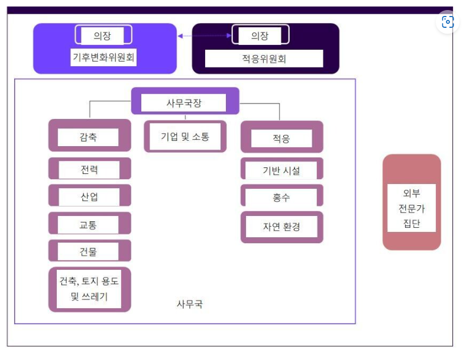
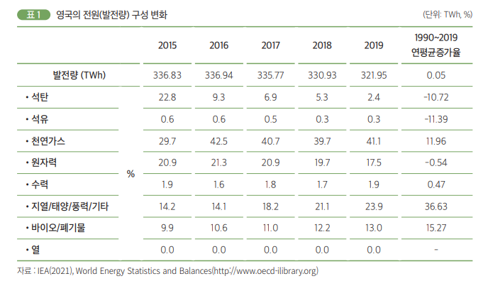

MIT Technology Review
탈탄소화
<각 나라별 정책>
4. 영국
“80% 감축(1990년 대비)” 녹생성장 위한 녹색투자기금 활성화, 에너지부문 생산성 및 효율성 강화, 자연자원 가치 증대, 공공부문 및 정부의 주도적 참여
① 에너지 부문의 탈탄소화
에너지 정책방향을 EU 기후 에너지 정책에 준용하여 설정하고 ‘청정 성장 전략(Clean Growth Strategy)’을 추진하고 있다. 이에 따르면 2032년까지는 청정 연료 전원비중을 80%로 확대하고, 재생에너지 지원제도(Contract for Difference,CFD)를 적용함으로써 발전 부문을 청정전원체제로 전환하고자 한다. 2050년까지 100% 청정전원체제 구축을 도모함으로써 전원구성을 재생에너지･원자력 중심으로 전환하려고 한다. 또한, 영국 정부는 ‘기후변화법(Climate Change Act, 2008)’을 통해 2050년까지 온실가스 배출량을 1990년 대비 최소 80% 감축하겠다는 목표를 설정하고 있다.
① 탈탄소 정책
영국은 2030년 국가 온실가스 감축 목표를 1990년 대비 40% 줄이겠다는 기존 목표를 1년 만인 지난해 말 68%까지 감축으로 상향했다. 반년 만인 지난 22일 기후정상회의에서는 2035년까지 78% 감축하기로 목표를 다시 상향했다. 이 모든 것이 영국 기후변화위원회 권고에서 시작됐다. 영국 기후변화위원회 홈페이지와 주한영국대사관 설명을 종합하면, 영국 기후변화위원회는 독립기구로 ‘적응’과 ‘기후변화’ 두 개의 위원회가 있다. 위원들은 정치적 입김과 상관없이 오로지 능력으로만 선출한다는 것이 영국 쪽 설명이다. 경제학, 기후과학, 정치학, 국토·교통 등 다양한 분야 전문가가 참여한다. 적응위원회 의장이 기후변화위원회에도 참여해 두 위원회 간 협력을 유지한다. 사무국은 기업 담당과 소통 분야가 중심에 있다. 한해 예산은 370만파운드(57억원) 정도다. 정책 추진 근거가 되는 연구를 한다. 현재 의장은 1993~97년 영국 환경부 장관이었던 로드 데본이다. 지난 26일 더불어민주당 김성환·양이원영·이소영 의원실과 에너지전환포럼이 주최한 ‘영국 기후변화대응 방안과 탄소중립 이행방안’ 토론회에 발제자로 나선 영국 런던정경대학교 그랜텀 연구소의 알리나 아베첸코바 박사는 “위원회가 생긴 뒤 그동안 5번의 선거, 4번의 총리 교체가 있었지만 탈탄소 방향이 흔들린 적은 없었다. 단순한 자문기구를 넘어서 초당적 감시자 역할을 한다”고 말했다. 또다른 발제자인 영국 기후변화위원회 경영분야 위원 레베카 히튼 박사는 “영국의 경우 (이미) 목표 설정이 분명해서 지금은 정부의 탈탄소 진행 과정을 면밀히 감시하는 역할이 더 중요하다. (소통을 위해) 위원회의 자료가 투명하게 공개되어야 하고 과학적 근거도 확실해야 한다”고 조언했다.

① 영국의 발전량 구성 변화
태양광, 풍력 등과 함께 수력 및 바이오 등을 모두 합칠 경우 2019년 발전믹스에서 재생에너지가 차지하는 비중은 38.8%에 달하기도 하였다. 특히 태양광과 풍력, 지열등만 따졌을 때 1990년 대비 연평균 증가율이 36%를 상회하는 실적을 보여주었다. 유럽대륙과 분리되어 있고 다른 인접국과의 연계용량이 현재 5.7GW 수준(Clean Energy Wire, 2021. 7. 26.)인 제한적인 상황에서 영국이 이와 같이 청정에너지 중심의 탄소중립 성과를 보여주면서, 우리나라를 비롯하여 탄소중립을 추진하려는 다른 나라들로부터 주목받고 있는 상황이다.

③ 에너지 부문 탈탄소화
③ 깨끗하고 안전한 에너지 공급을 위해 ‘제8차 전력수급 기본계획’을 수립하였고, 2030년까지 재생에너지 발전비중을 20% 수준으로 확대하는 것을 골자로 한다. 정책목표 달성을 위해서는 2016년 말 대비 발전비중 3배, 설비용량 4배 확대가 필요한 상황이다.
참고문헌1
참고문헌2